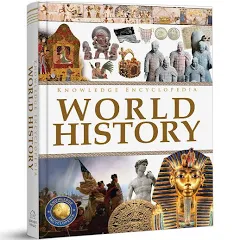
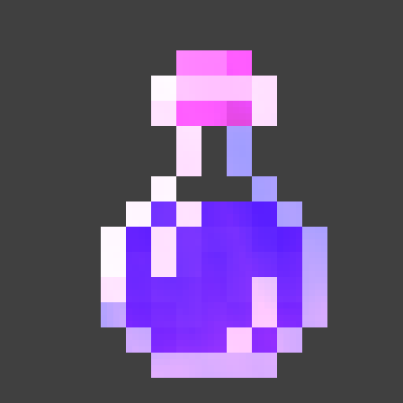
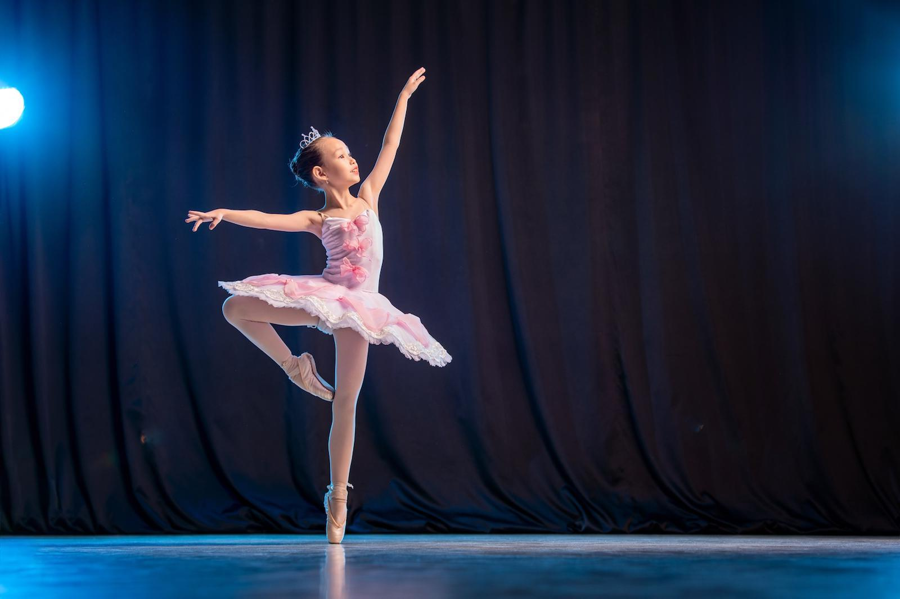
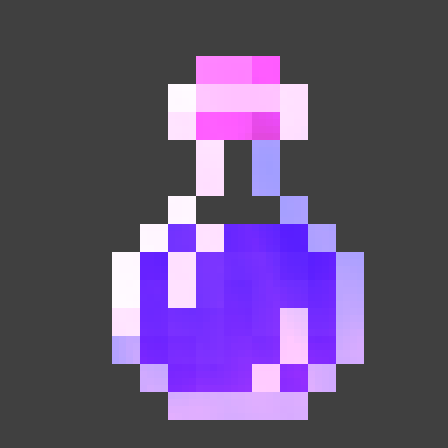
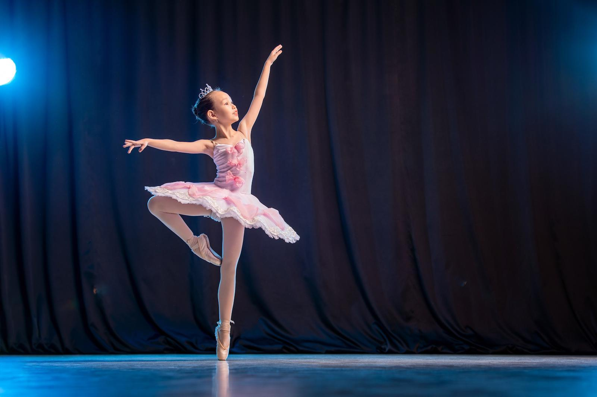

Sceduale

 or dance
or dance


The first thing we do for 4 & 5 graders is History class, here students learn about famous people in history.
or dance
After history is either coding or dance, the students choose to where to go. Coding is when the students do some levels of a coding adventure called Ozaria, and Dance is when they learn to dance with good music and games.

Then there comes science, where we learn about geoalaogy, hydroalaogy, all types of alaogies basically. Mostly geoalaogy.

Then there is theader. Where we play games better then dance, learn about theater tips, and more! Your child can have no shoes in this class.
Then there is LUNCH! You pay for your child's pizza and (S)he can make new friends.